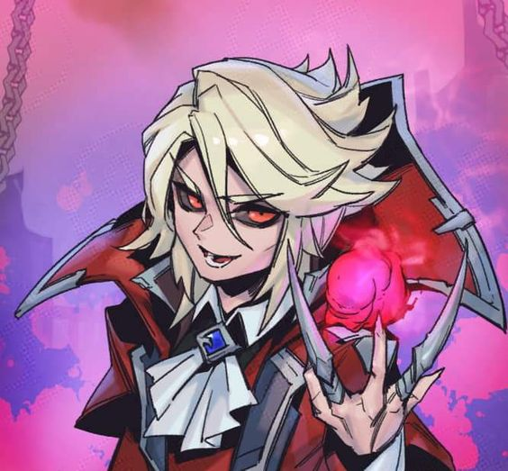
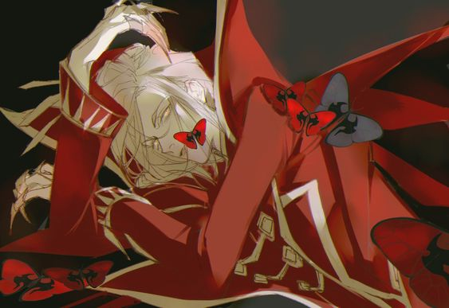

A master of ancient, forbidden sorcery,
Vladimir is among the oldest enigmas of Noxus. He was present at th
e dawn of the empire, and has since woven his influence deep into
its foundations… but he remembers little of those days. His mind
is mortal, and so most of his unnaturally extended life endures
not in his memory, but in his chronicles.
History has lost track of Vladimir on many occasions, though
its pages are littered with figures suspected to have been him.
Legend once told of a prince in a kingdom threatened by the infa
mous darkin, as their great war spilled into Valoran. With his fa
ther’s crown at stake, and many more heirs ahead of him in the lin
e of succession, the unfortunate youth was traded to the fallen go
d-warriors as a hostage.
Mortals were little more than cattle under the tyranny of the darkin,
their supremacy apparent in the sorceries they had conceived—the art
s of crafting flesh and transmuting blood, granting them mastery ove
r life itself.
Believing himself above other mortal vassals, an
d therefore worthy of such power, Vladimir was the first of his ki
nd permitted to study this terrifying magic. His devotion earned hi
m a place of favor in his patron’s warhost, and the right to practi
ce hemomancy and enforce the darkin’s will on lesser beings. Over ti
me, the god-warrior watched with amusement as Vladimir came to gove
rn his subjects with as little mercy as the darkin themselves.
The fall of these cruel tyrants is, likewise, the stuff of legend
. An account of it, written in the dead High Shuriman language,
is kept hidden within the Immortal Bastion. It speculates that V
ladimir’s master was not imprisoned like so many of his kin, but i
nstead died at the hands of his own warhost. The few surviving mor
tals fled, taking what knowledge they had of blood magic with them.
Unknown to all but Vladimir himself, it was he who struck the k
illing blow. Scarred, blinded, driven mad by the radiance of a
darkin’s undoing, he absorbed enough power to renew flesh that w
as never meant to last beyond a mortal lifespan.And he has done t
his countless times since, through rituals too vile to speak of.
At the height of Mordekaiser’s dark reign, it was said that a mythic and bl
oodthirsty fiend haunted the coastal cliffs of eastern Valoran, demanding yo
ung lives and savage worship from the local tribes. Few were welcome in his
lair, until the day a pale sorceress approached this barbarian god with an o
ffer. The two feasted together as equals, weaving magic so dark that the wine
at their table soured, and the roses withered, vibrant red turning to black.

Thus began the pact between Vladimir and LeBlanc,
rife with disputes, and games of politics and war.
Over the centuries, others joined them—powerful nob
les, exalted masters of magic, and beings darker s
ill. This cabal grew into the hidden power that wou
ld guide the throne of Noxus for more than a thousan
d years, orchestrating many of the empire’s most ambi
tious campaigns.Uniquely among the leaders of the Black
Rose, Vladimir has rarely limited himself to scheming f
rom the shadows. In the past, he deigned to join the N
oxian noble courts during the most interesting of times
, only to fade into seclusion decades later, his extreme
age—and the atrocities his sorcery could wreak—a well-ke
pt secret. Even so, under Vladimir’s tutelage, the art o
f hemomancy has found a place in the military of Noxus, a
nd among scions of the old aristocracy. Among these divers
e practitioners is the Crimson Circle, a youthful cult d
edicated as much to Vladimir’s personality as to blood
magic itself.

With the death of the previous Grand General and the rise o
f Jericho Swain, the political landscape of the empire chang
ed dramatically, and Vladimir has been forced to rouse himsel
f once more.Wearing the guise of a benevolent socialite, he ha
s returned to the public eye as a vocal opponent of the ruling
Trifarix council… much to the concern of more cautious members
of the Black Rose. Indeed, his reappearance may have come too
soon, as time has not yet washed away all the stains of his
previous lifetime, and it seems likely that Swain himself ha
s begun to grasp Vladimir’s true nature.As a new and darker c
onflict approaches Noxus, Vladimir drinks deeply from the rene
wed vitality of the empire, reminding himself of his past glo
ries. To him, this life is a mere revelry, a masquerade spann
ing centuries, and the prologue to greatness—for though the d
rkin eventually fought amongst themselves and lost their immor
tal grip on the world, Vladimir knows he is strongest alone.